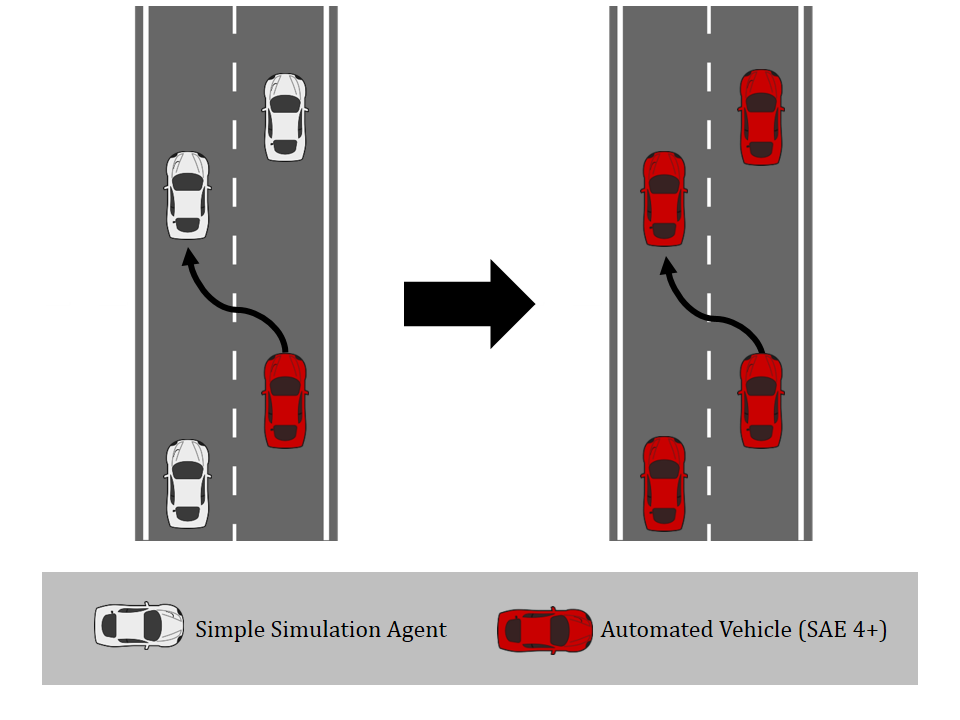
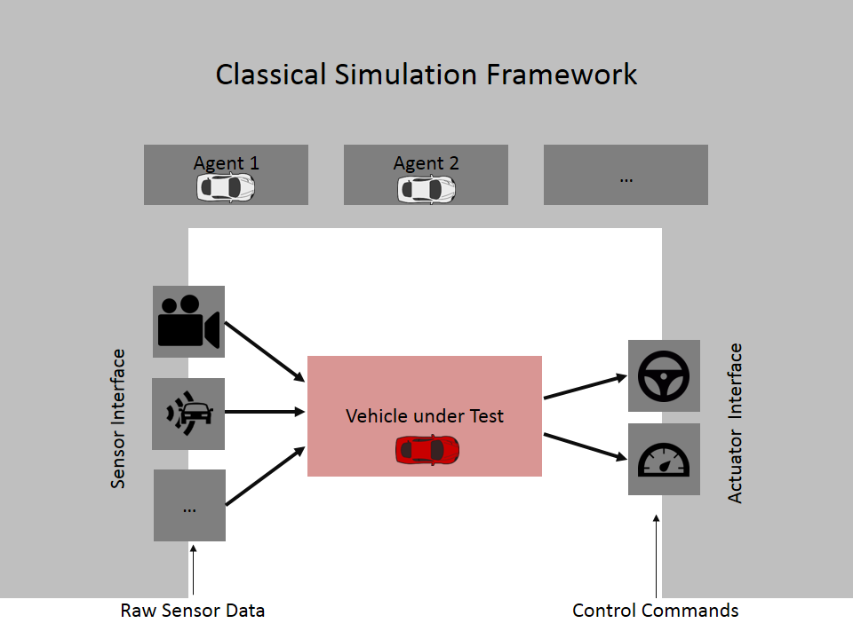
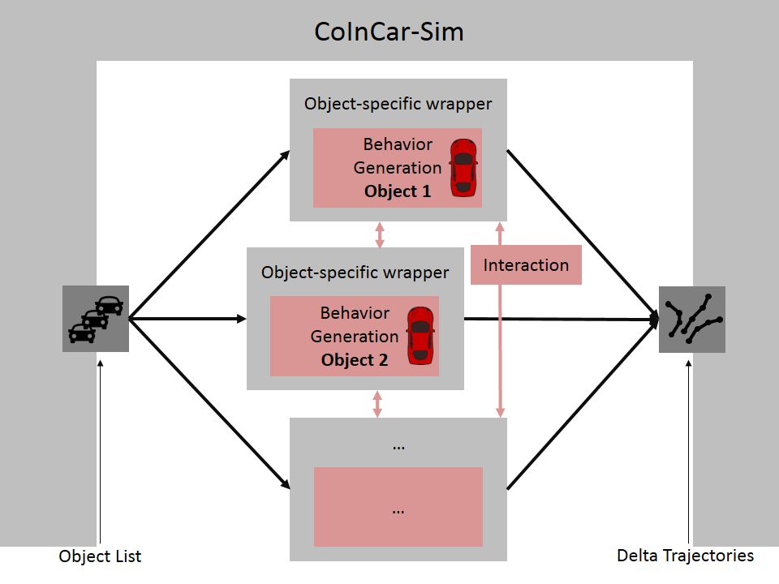

class: center, middle # CoInCar-Sim An Open-Source Simulation Framework for Cooperatively Interacting Automobiles --- # Motivation * Goal: * Tool to develop and evaluate cooperative motion planning * Focus: interaction between traffic participants -- * Problem: * Static datasets are not applicable, participants do not react at all * Simple behavior models for simulations do react, but not cooperate -- * Wanted: * A simulation framework where multiple sophisticated agents can interact .center[] --- # Requirements * Modular * Fast * Easy-to-use and open interface * Tooling * Visualization * Logging * Record and replay * Evaluation --- # Keep it simple .center[**Don't**] .center[] * Don't force the use of an underlying physics engine * Don't focus on sensor and actuator emulation --- # Keep it simple .center[**Do**] .center[] * Only control location and time * Model physics seperately for every agent, depending on its needs -- * Facilitates simultaneous test of sophisticated algorithms using noisy and incomplete information and new approaches using perfect world knowledge --- # ROS * http://www.ros.org/ * Large community * Widely used in automated driving * Open-source * BSD licensed * Has interfaces in C++ and python * Actively maintained and developed * Fulfills all requirements --- # Interfaces .center[] * Interface between simulation and software under test -- * Facilitates usage of very same code in vehicle and in simulation -- * Noise, limited sensing horizon and poor detection / tracking / localization performance can easily be modeled -- * Defined as ROS Messages --- # Getting Started * Source ROS * Navigate to the folder where you want to place the framework * Install ```bash desired_folder$ bash <(wget -qO- https://raw.githubusercontent.com/coincar-sim/coincarsim_getting_started/release/setup_workspace.sh) ``` * Run ```bash desired_folder$ cd catkin_ws catkin_ws$ source devel/setup.bash catkin_ws$ roslaunch simulation_initialization_ros_tool _whole_framework.launch ``` --- class: center # CoInCar-Sim .center[<img src="framework-rviz.png" alt="Drawing" style="width: 500px;"/>] .left[ * Open-source * BSD licensed * Tested using CI * Single line installation * Tutorial provided * Code: https://github.com/coincar-sim/coincarsim_getting_started * Publication: [DOI:10.1109/IVS.2018.8500405](http://dx.doi.org/10.1109/IVS.2018.8500405) | [PDF](http://www.mrt.kit.edu/z/publ/download/2018/Naumann2018CoInCarSim.pdf)]